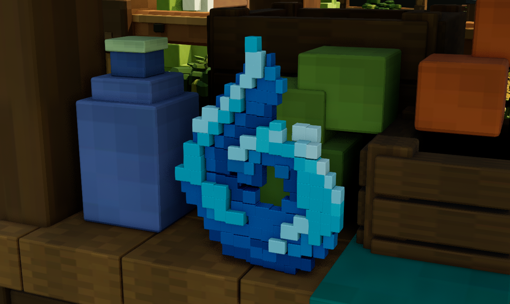
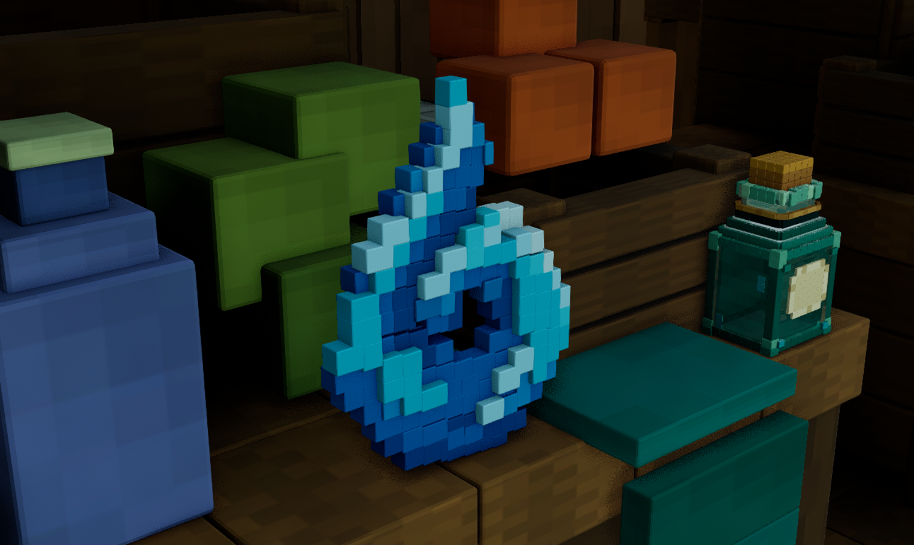
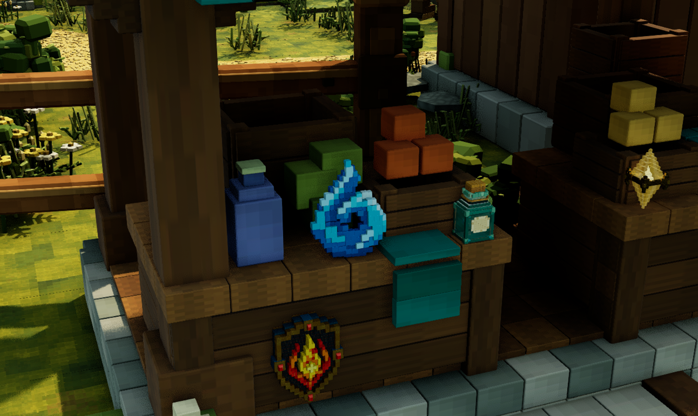

Editable Blender wave with 155 closed parts, 16,740 triangles and three packed PNG8 maps. Its curl is a real opening. The 31.22 cm model is seated on the left market counter. Saved-map reload, material bindings, four base samples and twelve opening/solid collision probes passed. Silhouette overlap is 95.0%; this measures the outline only.



Some rectangular front divisions and relief steps differ from the reference cubic rhythm. The pale crest, curl interior and lower profile need closer shape matching. Corners and highlights remain sharper and flatter than the concept; Unreal shade is darker. Rear surfaces are inferred. No fluid simulation, rigid-body balance, character movement or performance validation.